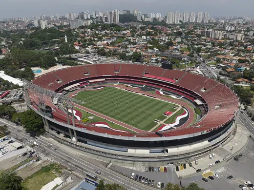
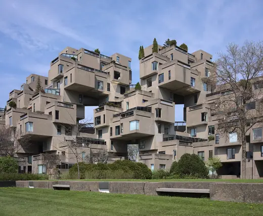
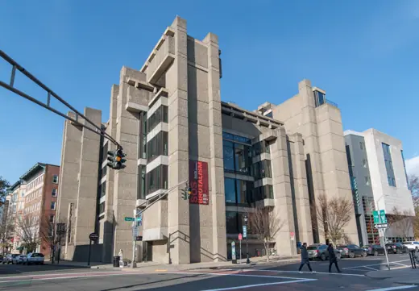
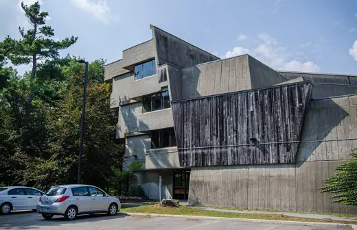

Buildings 258
Sort
 Barbican Estate1982 · London
Barbican Estate1982 · London Royal National Theatre1976 · London
Royal National Theatre1976 · London Bank of London and South America1966 · Buenos Aires
Bank of London and South America1966 · Buenos Aires Preston Bus Station1969 · Preston
Preston Bus Station1969 · Preston Palace of Justice (Punjab and Haryana High Court)1955 · Chandigarh
Palace of Justice (Punjab and Haryana High Court)1955 · Chandigarh St. John's Abbey Church1961 · Collegeville
St. John's Abbey Church1961 · Collegeville
Morumbi Stadium (Estádio Cícero Pompeu de Toledo)1970 · São Paulo Montreal Olympic Stadium1976 · Montreal
Montreal Olympic Stadium1976 · Montreal Chichester Festival Theatre1962 · Chichester
Chichester Festival Theatre1962 · Chichester Buzludzha Monument1981 · Kazanlak
Buzludzha Monument1981 · Kazanlak OCBC Centre1976 · Singapore
OCBC Centre1976 · Singapore
Habitat 671967 · Montréal Trellick Tower1972 · London
Trellick Tower1972 · London Boston City Hall1968 · Boston
Boston City Hall1968 · Boston Capitol Complexc. 1962 · Chandigarh
Capitol Complexc. 1962 · Chandigarh Barbican Centre1982 · London
Barbican Centre1982 · London Unité d'Habitation1952 · Marseille
Unité d'Habitation1952 · Marseille Herbert F. Johnson Museum of Art1973 · Ithaca
Herbert F. Johnson Museum of Art1973 · Ithaca SESC Pompéia1986 · São Paulo
SESC Pompéia1986 · São Paulo
Yale Art and Architecture Building1963 · New Haven Most SNP (UFO Bridge)1972 · Bratislava
Most SNP (UFO Bridge)1972 · Bratislava Queen Elizabeth Hall1967 · London
Queen Elizabeth Hall1967 · London Lyndon Baines Johnson Library and Museum1971 · Austin
Lyndon Baines Johnson Library and Museum1971 · Austin Grand Théâtre de Québec1971 · Quebec City
Grand Théâtre de Québec1971 · Quebec City Hirshhorn Museum and Sculpture Garden1974 · Washington
Hirshhorn Museum and Sculpture Garden1974 · Washington Palace of Assembly1962 · Chandigarh
Palace of Assembly1962 · Chandigarh Breuer Building1966 · New York
Breuer Building1966 · New York Secretariat Building1958 · Chandigarh
Secretariat Building1958 · Chandigarh Museum of Modern Art, Rio de Janeiro1967 · Rio de Janeiro
Museum of Modern Art, Rio de Janeiro1967 · Rio de Janeiro Geisel Library1970 · San Diego
Geisel Library1970 · San Diego MASP1968 · São Paulo
MASP1968 · São Paulo National Library of Argentina1992 · Buenos Aires
National Library of Argentina1992 · Buenos Aires Metropolitan Cathedral of Rio de Janeiro1979 · Rio de Janeiro
Metropolitan Cathedral of Rio de Janeiro1979 · Rio de Janeiro Kyoto International Conference Center1966 · Kyoto
Kyoto International Conference Center1966 · Kyoto Alexandra Road Estate1978 · London
Alexandra Road Estate1978 · London ECLAC Building1966 · Santiago
ECLAC Building1966 · Santiago Dallas City Hall1978 · Dallas
Dallas City Hall1978 · Dallas Balfron Tower1967 · London
Balfron Tower1967 · London Sainte-Marie de La Tourette1960 · Éveux
Sainte-Marie de La Tourette1960 · Éveux Boston Government Service Center1971 · Boston
Boston Government Service Center1971 · Boston Knights of Columbus Building1969 · New Haven
Knights of Columbus Building1969 · New Haven Florey Building1971 · Oxford
Florey Building1971 · Oxford Park Hill1961 · Sheffield
Park Hill1961 · Sheffield FAU-USP Building1969 · São Paulo
FAU-USP Building1969 · São Paulo Robert C. Weaver Federal Building1968 · Washington
Robert C. Weaver Federal Building1968 · Washington IIT Kanpur Academic Areac. 1966 · Kanpur
IIT Kanpur Academic Areac. 1966 · Kanpur
Scarborough College (Andrews Building)1964 · Toronto